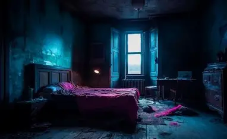
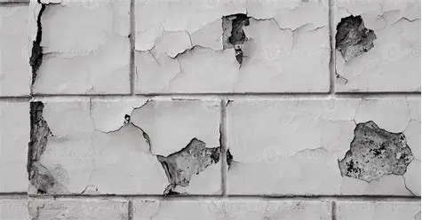
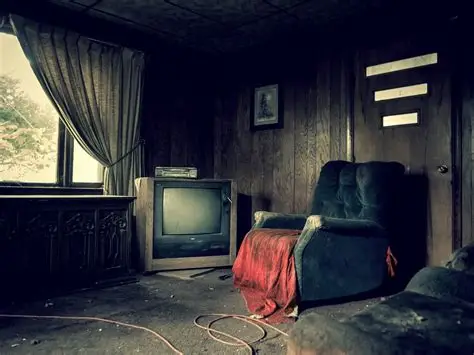
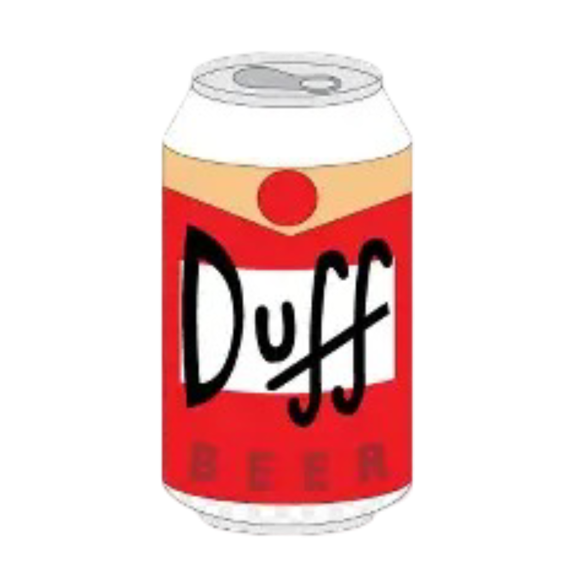

Huir fue, sin duda la peor y más dolorosa de todas las decisiones que
pudieron tomarse. No solo te marcó a ti, sino también a Once, a Milo y a la familia
de Will a quienes, de una forma u otra, sentís que fallasteis. Cada uno cargó con
aquel momento de una manera distinta, como si el peso de la culpa se acomodara de forma
diferente sobre los hombros de cada uno.
Lucas es un ejemplo especialmente desgarrador. Haber avandonado a su amigo lo
sumergió en una profunda depresión, una mezcla de culpa y vacío que lo acompañaba incluso
en sus momentos más silenciosos. Para él, seguir vivo se convirtió en un recordatorio constante
de aquello que se perdió.
En el caso de Dustin, lo que lo consume no es solo la culpa, sino también una rabia feroz
dirigida hacia su propia cobardía. Aquella decisión lo persigue como un eco interminable.
Su frustración es tan intensa que pasa horas golpeando la pared con los puños, como si con
cada impacto pudiera expulsar un fragmento del dolor. Lo hace hasta que los nudillos comienzan a sangrar,
pero ni siquiera entonces siente que la furia disminuya.
Y luego estás tú. Sobre tus hombros recae el peso más duro: la carga de haber sido quien
tomó la decisión final. El dolor y la sensación de responsabilidad se han vuelto tus
compañeros constantes, recordándote una y otra vez lo que ocurrió. La culpa te ha calado
tan hondo que el único consuelo que encuentras está en la bebida, en esa falsa calma que te
ofrece por unas horas, aunque al despertar el peso sea aún mayor.





